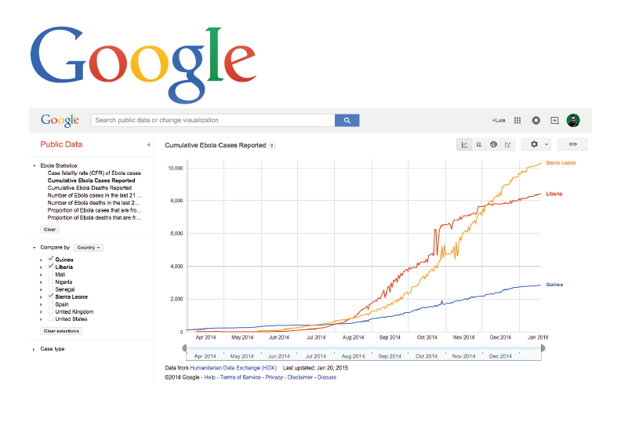

What is HDX?
The Humanitarian Data Exchange (HDX) is OCHA’s open platform for sharing humanitarian data. HDX’s objective is to make humanitarian data easy to find and easy to use for analysis.
Embed Capabilities
Visualizations can be embedend and remain fully interactive.



Quality Assurance

How can you support HDX?
Share Data: https://data.hdx.rwlabs.org
Volunteer: hdx@un.org
Join the Conversation: @humdata